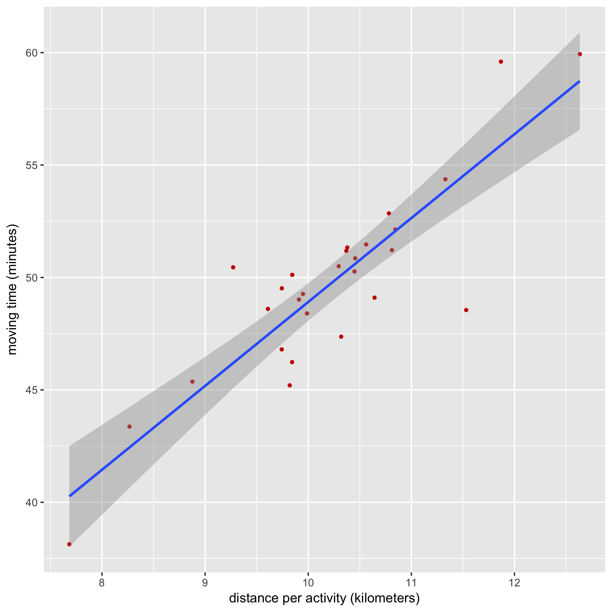

Creating Strava charts with R
This article is the sequel of Creating Strava charts with Clojure and Incanter: I decided to have another try generating charts with R (even though I don't know much about it).
R seems to be well-suited for charts generation. The free IDE RStudio Desktop brings several facilities: dataset visualization, variable history, integrated help etc. RStudio Desktop can be downloaded or installed via a packet manager (for instance, on a Mac with homebrew, you can run brew cask install rstudio from a terminal).
So our goal is still to:
- call Strava API that returns activities as JSON data
- transform data: do basic conversions (meters per second into km/h, seconds into minutes, etc.)
- display a chart (example: distance and moving time)
R has many additional libraries that are available on "CRAN repository". The following statements import the libraries I have selected:
library(rjson)
library(httr)
library(ggplot2)
library(scales)
1. Retrieve data via Strava API
The following code calls the Strava API for activities with an authorization token to retrieve the 200 last activities (run/ride/swim), as a JSON string (characters):
token <- readline(prompt="Enter Strava access token: ")
activities <- GET("https://www.strava.com/", path = "api/v3/activities",
query = list(access_token = token, per_page = 200))
activities <- content(activities, "text") # Retrieve JSON content as string
2. Transform data
We then need to transform our JSON content into tabular data, called dataframes:
activities <- fromJSON(activities) # Transform JSON content into lists
activities <- lapply(activities, function(x) { # Apply an anonymous function on each list elements
x[sapply(x, is.null)] <- NA # Replace nulls by "missing" (N/A)
unlist(x)
})
df <- data.frame(do.call("rbind", activities))
I have to admit I "cheated" with Google because R data structures are not my cup of tea! 🤓
However, we can notice that:
- R is a dynamic languages: variable types are not specified.
- Variables can be re-affected (and their type can change)
Distances and durations can be converted:
# Convert durations into minutes (Strava API returns seconds):
df$moving_time <- as.numeric(as.character(df$moving_time)) / 60
# Convert distances into kilometers (Strava API returns meters):
df$distance <- as.numeric(as.character(df$distance)) / 1000
Nota bene: our dataframe contains factors (factors are data with all known values). Before converting them, we need to retrieve their name via the function as.character.
3. Display a chart
The final step consists in using the ggplot2 library to display a chart for "distance and moving time" and export it as a PNG image:
ggplot(df, aes(x=distance, y=moving_time)) +
geom_point(size=1, colour="#CC0000") + # red points
geom_smooth(method=lm) + # add a line for linear regression
xlab("distance per activity (kilometers)") + # X label
ylab("moving time (minutes)") # Y label
ggsave("/tmp/moving-time.png") # save in a PNG file
The generated chart:

The full code that displays several charts.